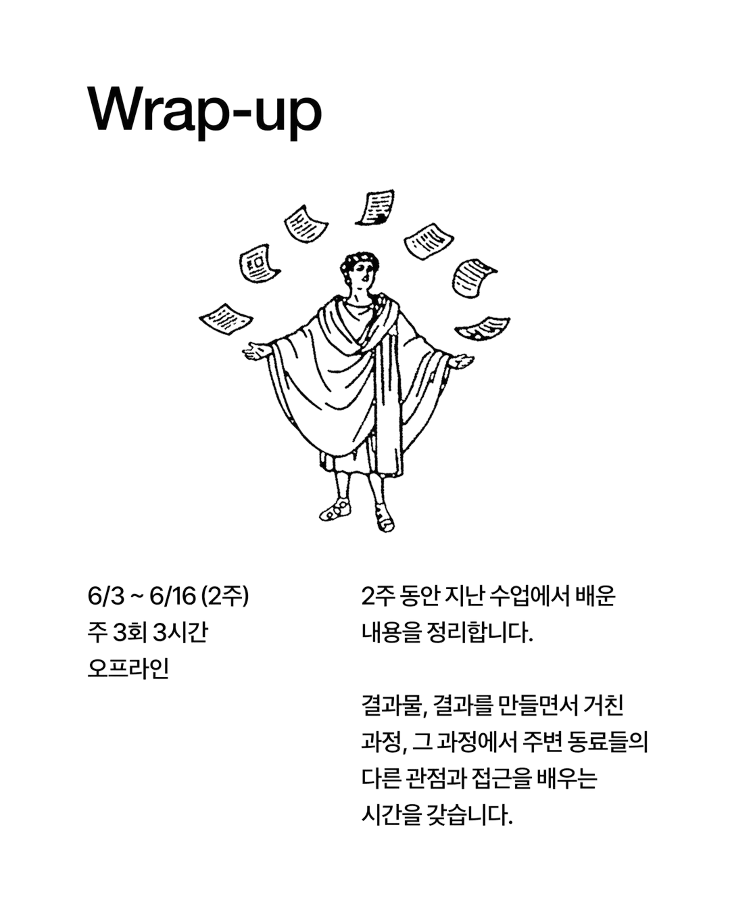
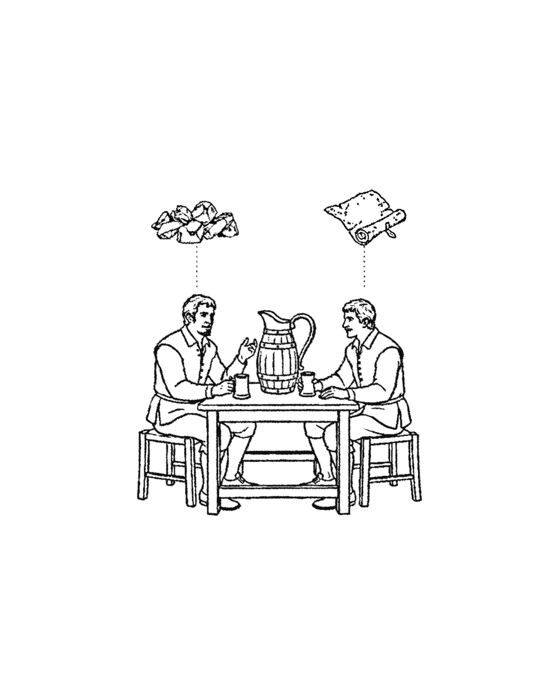
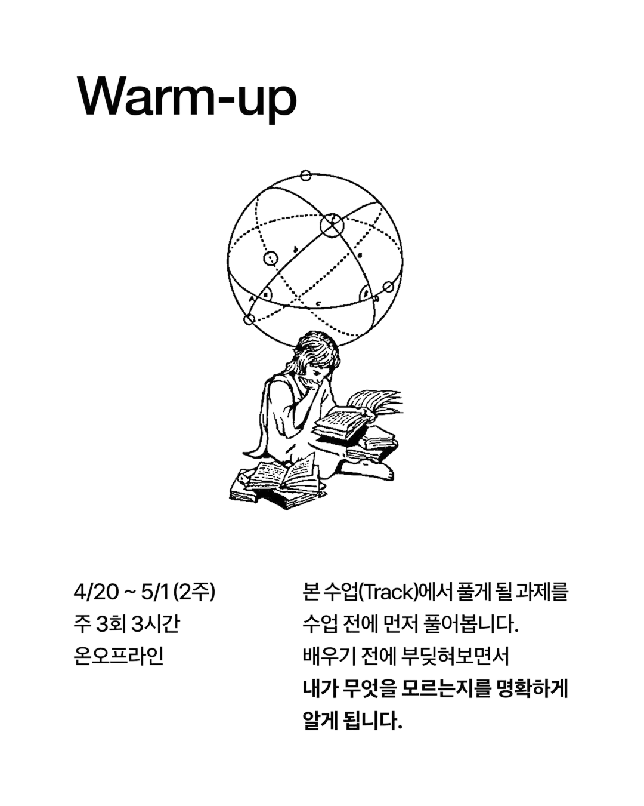
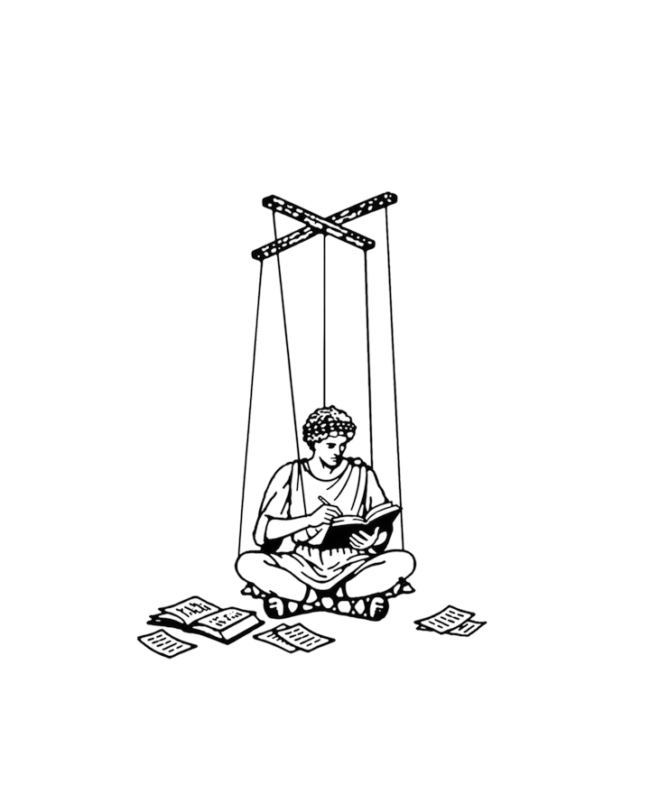
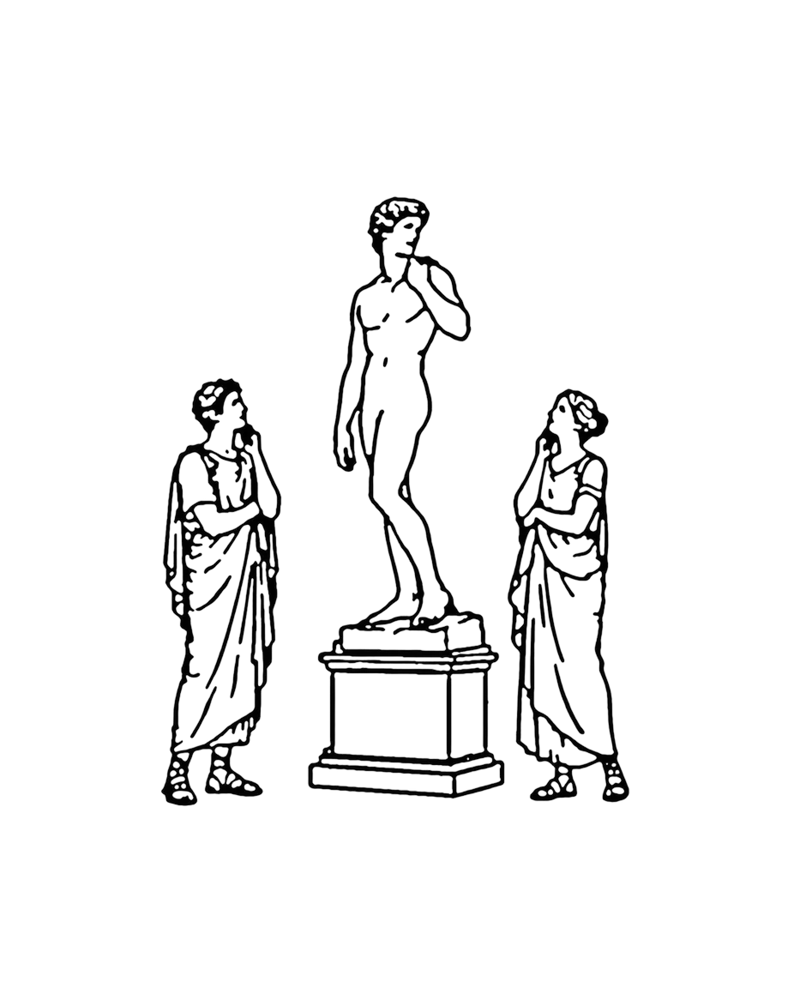
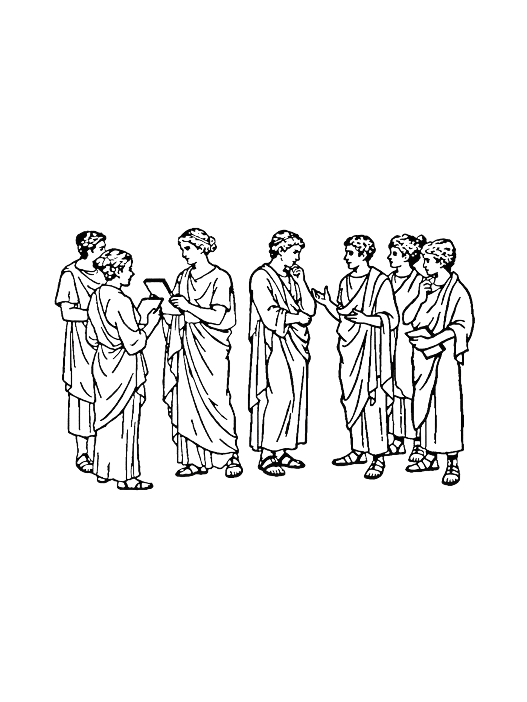
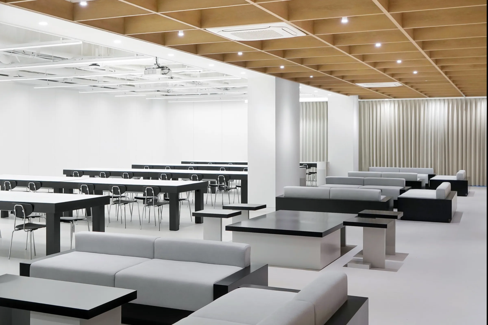

Fundamental
4개월 동안 매주 이어지며, 한 분야의 핵심 원리를 전문가와 함께 오래 다지는 수업입니다. 사고방식 위주의 기본기를 학습할 때는 지식을 습득하는 것은 물론, 다양한 맥락에서의 적용이 필요하기 때문에 긴 호흡으로 진행합니다.
도구는 빠르게 바뀝니다. Phi는 도구보다 사고방식에 집중합니다. 탁월한 인재는 어떤 조건에도 적용할 수 있는 자신만의 성공 방정식을 갖고 있고, 이 인재를 벡터형 인재라 부릅니다. 1년제 프로그램은 벡터형 인재가 가진 역량과 태도를 학습하고, 나아가 주체적으로 자신만의 역량과 태도를 만들어갑니다.
이 과정은 연령, 직군, 경력을 제한하지 않습니다. 디자인을 더 깊이 이해하고 싶은 사람, 방향을 다시 잡고 싶은 사람, 스스로 만들고 출시할 수 있는 기반을 갖추고 싶은 사람. 어느 지점에서 출발하든, 디자인에 진지한 태도를 가진 분이라면 지원할 수 있습니다.
어떤 환경에서도 스스로 답을 찾을 수 있는 사고방식을 만들기 위해,
Phi는 아래 역량과 태도를 중요시합니다.
Aesthetic Sense
Articulation
Structural Thinking
나무를 보는 것만큼 숲을 보는 일도 중요하다. 구체와 추상을 오가며 현재 다루고 있는 문제가 전체 그림에서 어느 위치성을 지니는지 이해하고, 파편화된 분야들을 하나로 엮어내는 구조적 사고를 훈련한다.
Problem Definition
Reframing

4개월 동안 매주 이어지며, 한 분야의 핵심 원리를 전문가와 함께 오래 다지는 수업입니다. 사고방식 위주의 기본기를 학습할 때는 지식을 습득하는 것은 물론, 다양한 맥락에서의 적용이 필요하기 때문에 긴 호흡으로 진행합니다.

1-2개월 단위로 구성되며, 기본기를 단기간에 습득할 수 있는 단위로 쪼개어서 경험하는 수업입니다. 여러 주제를 들어보면서 나에게 더 맞는 주제가 있다면 이후에 심화하여 학습할 수 있습니다.

한 달에 한 번, 하루 여섯 시간을 통째로 쓰는 수업입니다. 학습 목표에 따라 단기간에 집중적인 학습이 필요한 코스가 있고, 간격을 두고(spaced repetition) 다른 일과를 수행하면서 배우면 효과적인 코스가 있습니다. Ritual은 후자의 수업으로, 반복적인 훈련과 습관화가 필요한 종류의 내용을 배웁니다.

전문가 없이 학습자끼리 학습하는 수업입니다. 궁극적으로 학습자들은 스스로 배울 수 있는 상태가 되어야 합니다. Phi에서는 전문가의 전문성은 물론 학습자의 자율적 학습도 배워야 할 대상으로 여기며, 이를 위해 Learning Design팀이 각종 지원을 제공합니다.

학기 중 코스 외 시간에 학습 능력 증진을 위해 제공되는 워크숍입니다.

OT나 클로징 파티 등 코스를 시작하거나 끝맺음할 때, 혹은 특별한 이벤트가 있을 때 열리는 행사입니다.

Phi의 교육은 인지적 도제(Cognitive Apprenticeship)를 토대로 설계되었습니다.
전문가의 사고 과정을 학습자가 능동적으로 관찰할 수 있도록 다양한 장치가 준비되어있습니다.
1년제 프로그램은 아래 요소들로 구성되어있습니다.
Warm-up Week(B/24-8/28)를 시작으로 개강. 매주 월-금 수업이 진행되며, 오전/오후 각 세션으로 나뉘어 전문가 수업이 이어집니다
4개월의 루틴에서 벗어나 휴식과 함께 복수의 워크숍 프로그램이 진행됩니다. Practical Camp(토스), 디지털 타이포그래피 워크숍, Skills Boost 등이 예정되어 있습니다
1학기에서 쌓은 역량을 심화하고 통합하는 시간.
전문가 라인업이 일부 교체되며, 학습자가 자신만의 방향을 구체화합니다
수료(전 과정 이수) 후 졸업 프로젝트를 완성합니다. 졸업 프로젝트는 외부에 실제 발표 또는 출시되어야 합니다.
Phi의 1년제 프로그램 졸업자들은 토스의 별도 채용 전형에 지원할 수 있습니다.
2027년 8월, Phi 1년제 1기 졸업자를 위한
토스의 별도 채용 전형이 마련됩니다.
우수 졸업자에게는 채용 전형에 더해
별도의 입사 특전*이 제공됩니다.
*채용 특전의 세부 내용은 현재 검토 중입니다.
파고드는 문제 해결
디자이너에게 가장 중요한 역량을 고르라면 아름다움을 인식하는 능력 아닐까? 대상을 보았을 때 구체적으로 부분을 인식하고, 미추를 판단하며, 그 미추의 정도를 가늠할 수 있는 예리한 감각을 훈련한다.
대기업과 유니콘 스타트업을 오가며 빅테크부터 커머스, 콘텐츠까지 다양한 영역의 프로덕트를 런칭해왔다. 디자이너는 화면을 구현하는 사람 그 이상이라는 신념을 바탕으로, 디자이너들이 디자인의 실천적 가치를 통해 비즈니스와 세상에 실질적 임팩트를 만들어낼 수 있도록 교육에 매진하고 있다.
처음 발견한 문제의 해결책은 사용자의 문제를 해소하지 못할 때가 많다. 이 수업에서는 표면적인 현상 너머의 근본 원인을 집요하게 파고들어, 해결책을 만들어 검증할 때마다 문제를 더 깊이 다시 정의한다. 문제의 해상도를 높여가며 가치 있는 문제에 도달하고, 그것을 디자인으로 해결하는 법을 체화하게 된다.
수업 전체는 하나의 사이클을 반복하는 것으로 이루어진다. 사용자의 불편함을 포착해 문제를 정의하고, 가능한 해결책을 폭넓게 탐색해 그중 문제와 정확히 맞물린 것을 프로토타입으로 만들고, 문제가 실제로 해결되는지 검증한다. 그리고 여기서 멈추지 않는다. 검증 결과에서 더 근본적인 원인이 드러나면 문제를 다시 정의하고, 사이클을 처음부터 다시 돈다. 해결책을 한 번 만들어 보는 것이 아니라, 하나의 문제를 여러 바퀴에 걸쳐 파고드는 것이 이 수업의 기본 단위다.
4개월의 학기 루틴에서 벗어나 휴식과 함께 진행되는 워크숍 프로그램. 각 학습자의 성취와 보완이 필요한 부분을 바탕으로 구성됩니다. 캠프는 별도 비용 없이 희망자 모두 참석할 수 있습니다.
디자이너에게 가장 중요한 역량을 고르라면 아름다움을 인식하는 능력 아닐까? 대상을 보았을 때 구체적으로 부분을 인식하고, 미추를 판단하며, 그 미추의 정도를 가늠할 수 있는 예리한 감각을 훈련한다.
대기업과 유니콘 스타트업을 오가며 빅테크부터 커머스, 콘텐츠까지 다양한 영역의 프로덕트를 런칭해왔다. 디자이너는 화면을 구현하는 사람 그 이상이라는 신념을 바탕으로, 디자이너들이 디자인의 실천적 가치를 통해 비즈니스와 세상에 실질적 임팩트를 만들어낼 수 있도록 교육에 매진하고 있다.
처음 발견한 문제의 해결책은 사용자의 문제를 해소하지 못할 때가 많다. 이 수업에서는 표면적인 현상 너머의 근본 원인을 집요하게 파고들어, 해결책을 만들어 검증할 때마다 문제를 더 깊이 다시 정의한다. 문제의 해상도를 높여가며 가치 있는 문제에 도달하고, 그것을 디자인으로 해결하는 법을 체화하게 된다.
수업 전체는 하나의 사이클을 반복하는 것으로 이루어진다. 사용자의 불편함을 포착해 문제를 정의하고, 가능한 해결책을 폭넓게 탐색해 그중 문제와 정확히 맞물린 것을 프로토타입으로 만들고, 문제가 실제로 해결되는지 검증한다. 그리고 여기서 멈추지 않는다. 검증 결과에서 더 근본적인 원인이 드러나면 문제를 다시 정의하고, 사이클을 처음부터 다시 돈다. 해결책을 한 번 만들어 보는 것이 아니라, 하나의 문제를 여러 바퀴에 걸쳐 파고드는 것이 이 수업의 기본 단위다.
2026년 8월부터 2027년 6월까지
예정된 모든 수업을 이수한 상태.
수료 조건 달성 후, 2027년 7–8월에
본인의 목표에 따른 프로젝트를 완성합니다.
해당 프로젝트는 외부에 실제로 발표 또는 출시되어야 합니다.